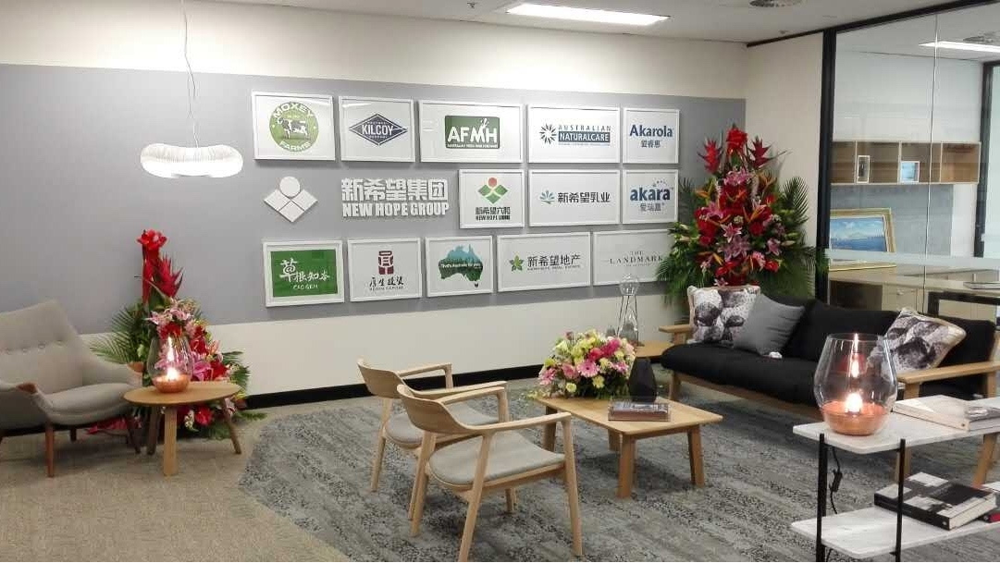

2016年10月8日－北京，近日，新希望集团澳新区域总部在悉尼正式成立，这是新希望集团过去五年在澳大利亚、新西兰开展投资及战略合作等各项业务以来首次正式设立办公总部，这不仅是集团进一步强化和加速全球扩张的重要阶段性成果，也将为促进和保障新希望集团国际人才和市场开拓方面发挥积极作用。
新希望集团董事长刘永好先生表示：“新希望集团走出国门的历史由来已久，在十余年国际化发展的探索道路中，新希望集团始终以开放的心态寻求合作与共赢，通过构建价值联盟实现全球优质资源的整合。我们非常看重中国与澳大利耶、新西兰之间的资源和市场互补性以及商业合作的巨大潜力，正是在这样的背景和机遇下，新希望集团不断加大了对澳大利亚、新西兰等地的投资，并在今天设立澳新区域总部办公室，更好推动事务与资源对接，最终更好促进两国贸易的发展。”
新希望集团在过去的五余年中不断加快对澳洲、新西兰的投资步伐，包括全资收购拥有27年品牌历史的澳大利亚保健品品牌ANC，完成在高端健康食品、健康医疗领域的重要海外战略布局；收购澳大利亚第四大牛肉加工商Kilcoy畜牧业公司(简称KPC)，利用新希望优质的产业链资源帮助其丰富产品供应类型，拓展新的销售渠道，提高市场占有率，目前, KPC员工数量和牛肉产量均有较大幅度提升，阶段性成果显著；新希望乳业与Moxey家族、Perich集团及澳大利亚自由食品集团，合资成立了“澳大利亚鲜奶控股有限公司”，通过上游投资，完善了“上游-加工-终端产品”的全产业链布局。
继新希望地产与合作伙伴VIMG集团购得位于澳大利亚新南威尔士州南部StLeonards的一块土地后，该地块将建成北览Chatswood、南阅Harbour Bridge的43层的地标性建筑，随着近日开工庆典仪式的正式拉开帷幕，这一公寓住宅精品也将正式面向全球发售。这也是继农牧和乳业后，新希望集团在房地产领域开发的最新投资举措，未来这一投资规模还将继续扩大。
新希望集团始创于1982年，在30余年的发展中已经成为中国最大的民营企业集团之一。基于自身资源和优势，新希望集团不断开拓新的产业领域，从饲料生产，跨入农业科技、食品加工、渠道终端、设施建设、金融服务等多个领域。目前集团业务范围涵盖全球30多个国家和地区，已逐步成为以现代农业与食品产业为主导，并持续关注、投资、运营具有创新能力和成长性的新兴行业的综合性企业集团。